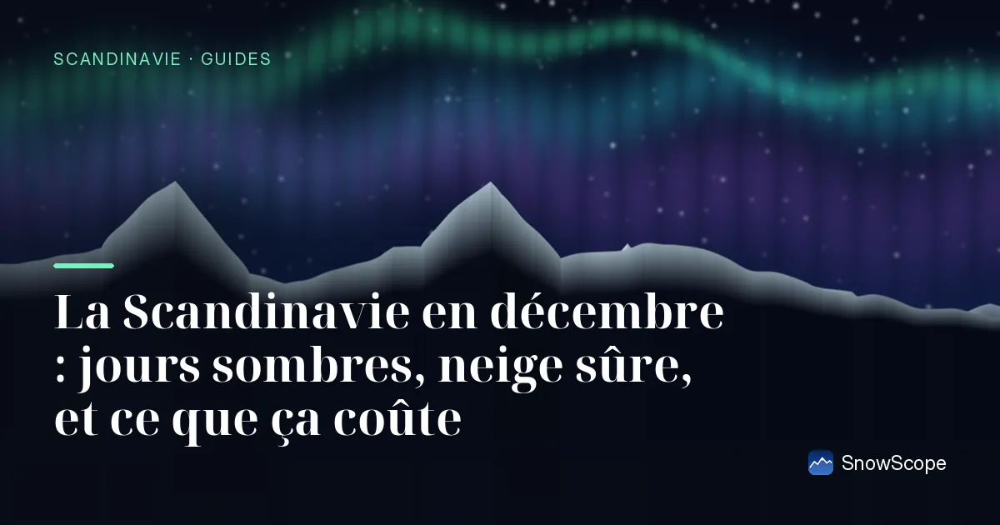

La Scandinavie en décembre : jours sombres, neige sûre, et ce que ça coûte
Le décembre scandinave apporte une certitude glacée et une lumière terne. À mi-montagne dans toute la région, l'épaisseur de neige atteint 30 cm ou plus dans presque chaque hiver—de 83 % à Levi et Ylläs à 100 % à Hemavan. Le bémol : les journées courtes, les tarifs abrupts qui varient selon la date en Norvège et Suède, et une division nord-sud en fiabilité.
Consultez les prévisions neige en temps réel pour Scandinavia in December sur l'application SnowScopeHauteurs de neige, alertes poudreuse et carte 3D, gratuitement.
Où les probabilités vous favorisent
Si vous skiez à mi-montagne, la Scandinavie est prévisible. Hemavan, Hemsedal, Oppdal et Geilo atteignent tous 30 cm ou plus dans 96–100 % des semaines de mi-décembre sur 46 hivers. Hemavan devance en épaisseur : 82 cm est typique le 15 décembre à mi-hauteur. Les mi-montagnes suédoise et finlandaise suivent : Ylläs 38 cm (moyenne sur toute la zone basse), les pentes inférieures de Hemavan 82 cm, la zone médiane de Hemsedal 70 cm.
Les altitudes basses et les stations du sud sont plus risquées. Sälen, la station suédoise la plus basse et la plus méridionale, voit 30 cm ou plus dans seulement 48 % des semaines de mi-décembre. Idre Fjäll en gère 65 %, Åre 89 %. Le schéma est clair : montez plus haut ou allez plus au nord pour la certitude hivernale.

Semaine de Noël contre début décembre
Début décembre est un pari dans le sud. À mi-niveau de Sälen, seulement 48 % des hivers avaient 30 cm le 15 décembre dans la semaine du 15–21 décembre. Attendez. La semaine de Noël (22–28 décembre) est beaucoup plus sûre : 61 % des hivers ont livré 30 cm à Sälen alors, et 98 % à mi-montagne de Hemsedal et 98 % à Geilo. Les stations du nord comme Hemavan restent constantes : 100 % dans les deux semaines à mi-hauteur.
Au sommet de toutes les stations, décembre est pratiquement garanti. Le sommet de Hemavan (1 136 m) a vu 30 cm ou plus dans 100 % des semaines de mi-décembre et de Noël également. Planifiez un voyage début décembre au nord ou en altitude ; planifiez un voyage à la semaine de Noël n'importe où.
Le pari vertical : base contre sommet
Les stations raides forcent un choix. Hemsedal chute 800 m du sommet à la base ; Hemavan 674 m ; Oppdal 742 m. À la base en mi-décembre, la fiabilité de la neige chute brutalement. La vallée de Hemsedal (640 m) atteint 30 cm dans seulement 57 % des semaines de mi-décembre ; son sommet (1 439 m) l'atteint dans 100 %. La base d'Oppdal (585 m) touche 93 %, mais ce n'est toujours pas certain. Les stations plus plates avec moins de dénivelé—Sälen, Idre Fjäll, Levi, Ruka—évitent cette division mais commencent plus bas globalement.
La semaine de Noël rétrécit l'écart. À la base de Hemsedal, 65 % des hivers atteignent 30 cm ou plus à la semaine de Noël, contre 57 % en mi-décembre. Planifiez les pistes de base pour Noël ; planifiez mi-montagne pour n'importe quelle semaine de décembre.
Tendances à long terme : le nord reste stable
Au cours des 15 derniers hivers (2011–12 à 2025–26), les stations du nord ont maintenu leur neige. Les semaines de Noël de Hemavan ont toujours livré 30 cm à mi-hauteur dans 100 % des hivers ; Levi dans 100 % ; Hemsedal dans 100 % ; Ylläs dans 100 %. Oppdal et Ruka ont tous deux géré 93 %. Mais les stations du sud plus basses se sont affaiblies. Les semaines de Noël de Sälen sont tombées à 47 % des hivers avec 30 cm à mi-niveau, contre des parts plus élevées dans le registre complet de 46 hivers. Idre Fjäll se situe à 60 %.
Ce changement importe pour la planification. Si vous avez de la flexibilité, réservez au nord ou en altitude. Si vous devez skier au sud en décembre, choisissez la semaine de Noël et réservez une piste en haute altitude.
Tarifs : Finlande fixe, Norvège et Suède fluides
La Finlande publie des tarifs fixes et s'y tient. Levi facture 60 EUR par jour (ou 57 EUR si réservé en ligne 14 jours à l'avance), Ylläs 60 EUR (55,50 EUR jusqu'au 11 décembre), Ruka 58 EUR par jour ou 265 EUR pour 6 jours. Vous pouvez planifier un budget et réserver avec certitude.
La Norvège et la Suède utilisent une tarification dynamique fixée par date. Geilo affiche 590 NOK (environ 56 EUR au taux de change du 12 novembre), mais Trysil, Hemsedal, Hafjell, Oppdal, Åre, Sälen, Idre Fjäll et Hemavan ne publient pas de tarifs fixes sur leurs boutiques en ligne. Réservez tôt et en ligne ; évitez la semaine de vacances de Noël si le coût importe.
Lumière du jour : planifiez autour de l'obscurité
La lumière du jour en décembre rétrécit à mesure que vous allez vers le nord. Le sud de la Norvège et de la Suède ont encore quelques heures de vrai jour ; la Laponie finlandaise entre dans la nuit polaire. Levi et Ylläs sont dans l'obscurité pendant une partie de décembre, quand le soleil ne se lève pas au-dessus de l'horizon. C'est frappant mais froid, et cela réduit les heures de ski considérablement. Commencez avant l'aube si vous voulez de la lumière l'après-midi ; apportez des sous-vêtements épais et des chaufferettes ; attendez-vous à ce que les pentes restent gelées.
Les stations à mi-altitude en Norvège et Suède centrale se portent mieux. Geilo, Oppdal et Hemsedal ont plus d'heures de jour que l'extrême nord mais toujours bien moins qu'en été. Planifiez vos meilleures pistes avant le déjeuner et prenez le remontée si les conditions s'assombrissent.
Conseils aux skieurs
- Pour un tarif fixe sur lequel vous pouvez compter, choisissez la Finlande : Levi, Ylläs et Ruka publient des forfaits journée et multi-jours sans surprises.
- En Norvège et Suède, achetez les forfaits en ligne et réservez tôt ; les prix varient selon la date et sont les plus élevés à la fenêtre de vacances de Noël.
- Choisissez mi-montagne ou plus pour la certitude en décembre ; les pistes de base sont plus sûres à la semaine de Noël qu'en début décembre.
- Aux stations du sud (Sälen, Idre Fjäll, Åre), attendez jusqu'à la semaine de Noël ; les stations du nord (Hemavan, Ylläs, Levi) sont fiables à partir de début décembre.
- Les journées de décembre sont courtes : commencez à la première lumière, déjeunez rapidement, et consultez le bulletin avalanche national avant de skier hors-piste dans l'obscurité.
À propos de ces chiffres
Les hauteurs de neige des stations sont la neige la plus épaisse sur le haut du domaine à la date indiquée ; ce sont des estimations pour une zone, pas une mesure en un point. Les prévisions peuvent changer. Consultez toujours le bulletin d'avalanche officiel avant le hors-piste.
Citer ce bulletin
Pour la recherche, l'enseignement ou la presse : chiffres et graphiques réutilisables librement sous CC BY 4.0 avec cette citation.
SnowScope (2026), La Scandinavie en décembre : jours sombres, neige sûre, et ce que ça coûte, https://snowscope.app/blog/fr/2026/11/scandinavia-december-skiing-dark-days-sure-snow-cost.html, consulté le 2026-11-14
SnowScope (Atlas Labs). (2026, November 14). La Scandinavie en décembre : jours sombres, neige sûre, et ce que ça coûte. SnowScope snow reports. https://snowscope.app/blog/fr/2026/11/scandinavia-december-skiing-dark-days-sure-snow-cost.html
BibTeX
@misc{snowscope2026scandinaviadecemberskiin,
author = {{SnowScope (Atlas Labs)}},
title = {La Scandinavie en décembre : jours sombres, neige sûre, et ce que ça coûte},
year = {2026},
month = nov,
howpublished = {\url{https://snowscope.app/blog/fr/2026/11/scandinavia-december-skiing-dark-days-sure-snow-cost.html}},
note = {Published 2026-11-14 13:29 UTC; accessed 2026-11-14}
}· CC BY 4.0 · Méthodes, données et outils →
Suivre Scandinavia in December
Gratuit : un message quand la neige arrive, et la météo chaque matin.
Autres bulletins neige

Le 15 décembre, Hemsedal affiche 32 cm en bas, 70 cm à mi-montagne et 106 cm en haut. L'altitude est décisive ici.

Mi-montagne à Hemavan compte 82 cm de neige en moyenne le 15 décembre. Chaque hiver depuis 46 ans a eu 30 cm ou plus mi-décembre. Données du 13 novembre 2026.